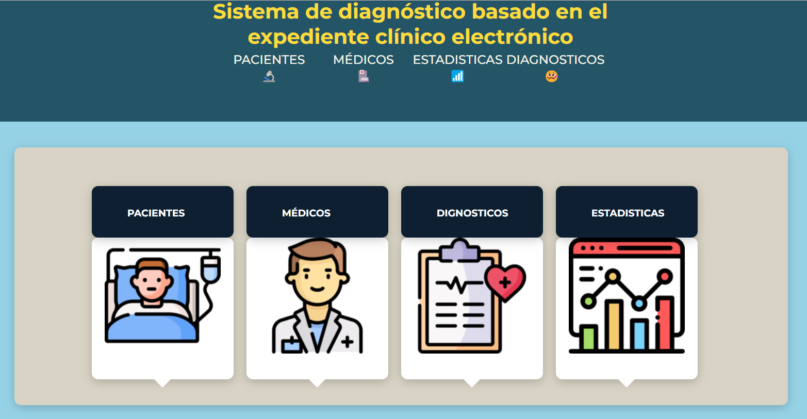

Degree on Computer Engineer!
My name is Alexa Salcedo!
Currently, I'm studying computer engineer, the programming languages that I use are:
Python, C++, and javascript, from them not only do I know the basic syntax but also a couple of frameworks like Kivy, Django, ExpressJS,
ReactJS, React-native. additionally to this, I use databases like PostgreSQL, MySQL, and MongoDB.
On other skills, I speak Spanish, English, and a little french
Web site made for an innovation laboratory of the university of Guadalajara.
Page to: iLabTDI
In general, the purpose of the web page is to announce the lab, also
counts with a users system with different types of users, and adds to this the different options on the menu that
shows the personnel in the lab, the coming events, a taste of the content on social media, and a section dedicated
to the projects.
This is a system that not only keeps the expedients of the patients of a doctor but also is able to analyze some of the information on those to diagnose a disease.
